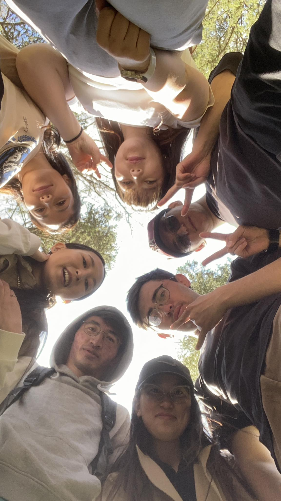

Манай веб сайтад тавтай морилно уу?
Сайн уу? Намайг Болат овогтой Айдана гэдэг. Миний гол зорилго бол өөрийнхөө мэргэжлийг хамгийн сайнаар эзэмшиж ирээдүйд хүн болгонд ашигтай олон аппликейшн бүтээх юм.
Би одоо МУИС-МТЭС-ийн 3-р курсийн оюутан. Би чөлөөт цагаар теннис тоглох дуртай. Хүний зорилго том байх тусам зорилгод хүрэх замдаа гарсан ямар ч саад бэрхшээл тэр хүний хувьд юу ч биш болж хувирдаг. Миний зорилго тийм том, шантарсан үед ахин босоход надад тусалдаг. Яг ямар зорилготой гэдгээ хэлэх цаг нь ирэхээр хэлнэ.
Надад урам өгдөг үгс:
- That dream was planted in your heart for a reason
- Be prepared to work always without applause
Миний гэр бүл

Би аав, ээж, гурван эгч болон хоёр дүүтэй хамт амьдардаг. Миний аавыг Болат гэдэг. Тэр цэцэрлэгийн сантекникч мэргэжлээр ажилладаг. Миний ээжийн нэр бол Жайнар. Ээж маань цэцэрлэгийн тогооч мэргэжилтэй. Том эгчийн нэр Нурсауле. Тэр хүний их эмч мэргэжлээр төгссөн одоогоор нарийн мэргэжлээ хүүхдийн эмчээр сурч байгаа. Хоёр дахь эгчийг маань Жанерке гэдэг. Тэр шүүгчийн туслахаар ажилладаг. Бага эгч маань МУИС-ийн Хууль зүйн салбарт эрх зүйч мэргэжлээр энэ жил төгссөн. Дүү маань 9-р ангид сурдаг. Манай гэрийн хамгийн эрх охин болох миний дүү бол 7-р ангид сурч байна. Аав маань бидэнд байнга: "Хичээл номдоо сайн байгаарай, хэрэгтэй зүйл байвал үнэтэй байсан ч хамгийн чанартайг авч байгаарай" гэж захидаг.
Миний найзууд
Миний найзууд бол зөвхөн хамт инээлдэж, цагийг хөгжилтэй өнгөрөөх төдийгүй, миний өсөлт хөгжил, дотоод ертөнцийн минь салшгүй хэсэг юм. Тэдэнтэйгээ хуваалцсан яриа, дурсамжууд нь миний оюун бодлыг тэлж ертөнцийг үзэх үзлийг маань гүнзгийрүүлдэг. Хэцүү үед тэдний зөвлөгөө, дэмжлэг надад амар тайван байдлыг авчирдаг бол баяр баясгалантай мөчүүдэд тэдэнтэй хамт байх нь тэр мөчийг илүү үнэ цэнэтэй болгодог. Найзуудтайгаа цагийг өнгөрөөх бүрд би өөрийгөө азтайд тооцож, тэдэнтэй үүсгэсэн холбоо бол амьдралын хамгийн нандин зүйлсийн нэг гэдгийг үргэлж санаж явдаг.
Холбоо барих
- Утас: +976-85338350
- E-шуудан: bolataydana73@gmail.com